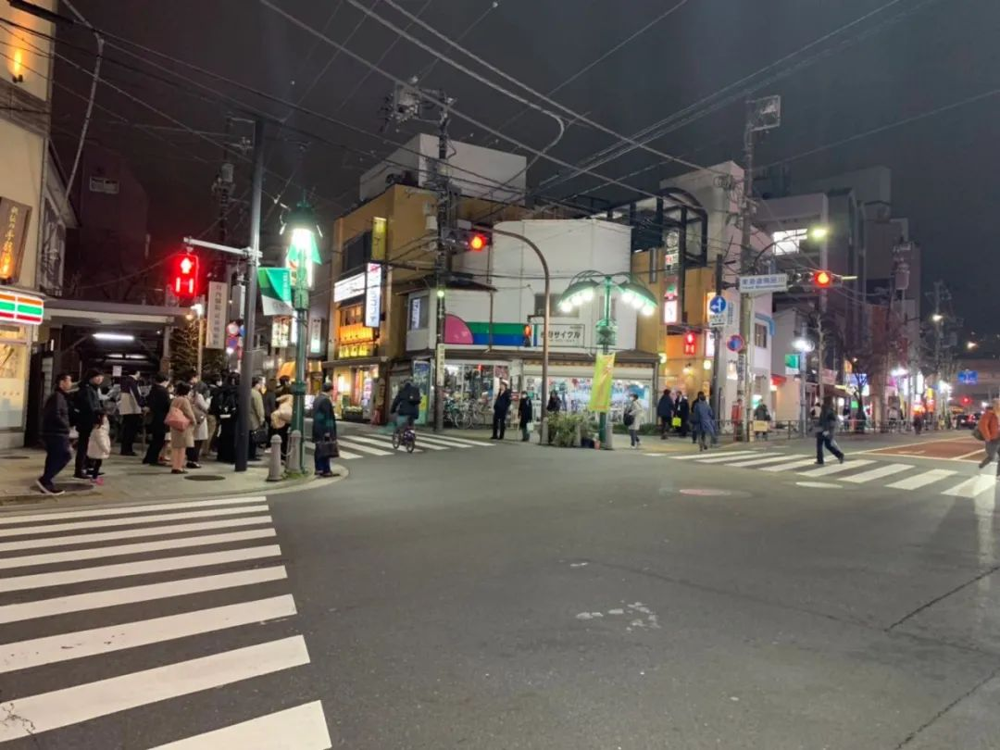
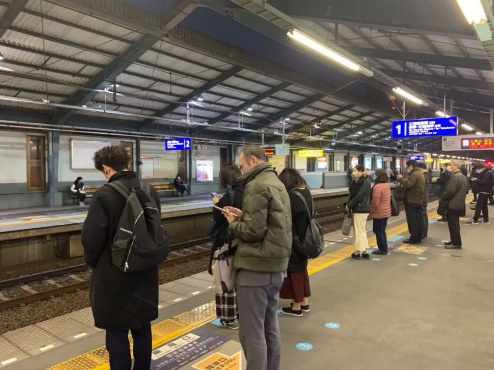

大邱紧张，大阪淡定 | 疫情双城记
原文链接 备份链接 澎湃新闻记者 于潇清 近日，韩国和日本新冠肺炎疫情防控形势日趋严峻，引起国际社会关注。 据韩国中央防疫对策本部2月28日最新通报，截至当天上午9点，韩国再新增新冠肺炎确诊病例256例，累计2022例，死亡病例达13例。 …

随着新冠肺炎疫情在全球蔓延，韩国和日本已经成为疫情高发地区。据韩国卫生部门消息，截至当地时间3月3日16时，韩国感染者总数升至5186人。日本形势同样不容乐观，截至当地时间3日下午六点半，已有985例确诊病例。当地疫情究竟如何？“商业人物”与4位分别生活在韩国和日本的朋友，进行了对话。
蛋黄酱 | 日本东京
01.一开始是我担心国内的父母，现在是父母担心我
我是2010年前往日本就读研究生的，13年毕业后留在了东京。我挺喜欢东京的生活，购物很方便。平常经常有国内的朋友，要我帮她们代购。1月22号左右，国内疫情开始爆发之后，我的微信俨然成了“代购专线”，每天大约有一二十个人问我，能不能帮忙寄点口罩。
这给我造成了很大的困扰。因为1月25左右，日本就很难买到口罩了，我住的地方，药妆店每天清晨就开始排长队了。排队的人大都和我一样，是往国内寄的。前前后后，我一共买了九百个口罩，寄给亲友。其中最后五盒，跑了四家店才买到，价钱比之前翻了一倍。我留了一盒，另外四盒寄给了远在江苏徐州的父母。

货架上口罩都已销售一空
那个时候我很担心我的父母。父母做点小生意，人际往来比较多。他们反过来担忧我，是从2月19号开始的，当天有443名乘客从停泊在横滨港的“钻石公主”号邮轮下船。他们着急的不得了，说是日本政府不懂其中的厉害，在国内，他们听到过不少接触十几秒就感染的新闻。
一开始，我并不怎么引以为然。总体上我感觉日本还是较为安全的。2月24号的时候，日本的确诊病例是838人，其中“钻石公主”号里就691人，剩下的133人中还包括一些中国游客。总不能因为这几十个感染者就停止生活运转了。
当时，我在日本接收到的信息是，勤洗手就能防患，患病者以老年人居多。我以为国内之所以这么严重，是因为没有戴口罩的习惯。日本因为春天防花粉过敏，几乎都是人人戴口罩的，这方面我的安全感比较足。
至于患病之后有什么后果，我也不清楚。一开始，那一盒口罩我一直没舍得用，想等感染后防止传染给别人再用。我一直以为日本的医疗水平是不错的，像传染病床位日本全国只有1800张这样的新闻，我反而是从国内的网站看到的。看到后，有些恐慌，但更多的是听天由命吧，我和朋友开玩笑说，感染的话希望能早感染，这样医疗资源还充足，救治的希望也大。
我隔壁工位的同事，家住神奈川县北部的相模原，她居住的社区有人感染了。在茶歇的时候，同事们会议论这些，但并没有人太当回事儿。
我在一家互联网公司上班，和国内情况类似，也差不多是996。东京生存压力挺大，上班族都很勤勉，不敢有丝毫懈怠，我之前生病了很少请假。曾有朋友建议我，请假躲避疫情，我觉得有点不可思议。日本人之间的距离感比较强，平常不大扎堆，午餐都是各吃各的，人和人也算保持着安全距离，应该没事，每天我都用这些话给自己打气。

东京傍晚的街头，每天依旧有不少人外出
变化也是有的，2月29号的时候，公司采取了一些措施，把内部培训会和招聘会都取消了。客户交流会也推迟了。从3月1号起，我开始在家办公了，但不是硬性规定。我们公司本来就推行在宅，t&l（管理部门）得身先士卒。其它部门还是要照常上下班。
小田 | 日本东京
02.很悲观，用厨房纸巾制作了一些简易口罩
我叫小田，1992年生人，2013年从中央财经大学毕业后到日本留学，目前在东京一家国际税务所上班。
受国内影响，1月中旬以后，我便时刻关注着国内的局势和亲戚朋友的状况。对新冠肺炎的防控，我认为自己比大多数的日本人，都要专业。2月16日，日本进行了11场马拉松，得知这个消息之后，我非常愤怒，当时已经有几百个确诊者了呀！可当我和日本朋友讨论这一话题时，他们竟然告诉我，参赛者大多都戴口罩了。我认为有点鸡同鸭讲。
我身边的日本朋友主要分两派：一派尽管很担心，但是又没有什么办法，只能从自己做起，戴好口罩、注意消毒；另一派比较乐天，觉得此次肺炎无异于日本本土的インフルエンザ(流行性感冒），虽然可以致死，大多是体弱多病的老年和幼儿，离自己比较遥远。即使感染，也没啥事儿。
对于日本的疫情，我有点悲观主义吧。从2月上旬左右开始，日本已经基本买不到口罩。各大超市早上开门的时候多少会放出一点。一般10:00营业，9点左右就已经排起来长队了。排队的人多为老年人和家庭妇女。普通单身上班族因为没有时间，是买不到口罩的。酒精类消毒产品，偶尔可以碰到。
我个人的防护，除了勤洗手、戴口罩、放假宅在家，也没什么办法。每天照样要挤地铁去上班。网络上有一段东京警视厅教大家用厨房纸巾制作简易口罩的视频，我跟着学了，制作了一些，以备不时之需。

东京的地铁站，每天还是有不少人通勤
在此之前，我一直挺信任日本的国家安全体系的，现在我呈失望状态。我这边得到的消息是，日本的轻症患者住院两天后就可以返回家，自行治疗。另外，按照日本的《传染病法》二级标准，政府根本就没有权力限制患者的行动。基本上每天我都是恐慌的，上下班路上，听到有人咳嗽或者清理嗓子，我就忍不住脑补，会不会是病毒携带者。觉得自己就像没带救生圈，便掉进深海里。如果有机会，我想回国内。
曹芳 | 韩国首尔
03.中韩两国之间存在一些误解
我目前在首尔大读博士课程，老公是韩国人，我平常和韩国人接触得很多。国内的消息可能有些滞后，其实面对这次疫情，韩国一直很紧张的。
我有个留学生朋友是2月初从巴厘岛旅行返回韩国的，有一些流鼻涕、打喷嚏的症状，上报之后就被要求在家隔离了14天，政府给配备了食物、矿泉水等物资。

首尔大学的隔离宿舍，学校将一栋楼拿出来给中国留学生隔离用
我个人的话，从2月中旬就不出门了，和朋友的约会也都取消了。基本就是呆在宿舍。最近几天我网购的箱子，已经堆满了半个阳台，储备了几袋大米，几十个方便米饭，好几箱饮用水，冰箱里塞满了速冻饺子。朋友过来拜访，带来的礼物也是米饭，这边的华人基本都采取了类似的防护措施，尽量不外出。

冰箱囤积的食物
我自己也做生意，经营着一家汉语培训公司，主要是针对韩国的企业、使馆、学校等进行汉语教学，三星、SK电讯等都是公司的客户。之前他们都是倾向实地教学的，2月20号之后，线下培训都改为线上授课了。目前SK电讯发现了一例疑似患者，整个总公司建筑都被封锁了，这在韩国电讯业是首次。

发现疑似病例后，韩国SK电讯封楼了
2 月24号的时候，首尔大学就在考虑这一学期要不要进行网络授课了，当时有不少华人留学生提出休学申请。2月26号，首尔大学建国以来第一次取消了毕业典礼，我的好多学姐只能借衣服在校门口拍照留念。首尔大学隔离用的是学生宿舍，一人使用两人间，条件不错。学校内疫情防控的宣传也很到位，不少角落拉上了横幅，设有宣传牌。

首尔大学校园里的横幅，上面写着“中国加油，武汉加油”
疫情爆发那天起，韩国政府会给每个人的手机发警报信息，呼吁老弱者尽量不要出门，建议不要游行聚会。疫情通报首尔市政府也每天都在发送。有一种说法是，韩国政府没有能力，其实韩国已经陆续有新措施出台，能看到政府非常努力。
小吴 | 韩国京畿道
04.担心集会有可能还会举行
防范意识方面，我是很强的，从二月初家里就储备好了很多口罩。我的爸爸开公司，我早早就提醒他，少见客户了。妈妈在首尔的江南区有个餐厅，这些天客人都减半了，消毒和防护方面妈妈也很注意。

京畿道的街头上几乎没有行人
韩国的紧张情绪其实出现得非常早。在1月下旬，韩国刚刚两三例疫情的时候，就有口罩抢购潮了。街上戴口罩的挺多，公共设施里也都设置了免洗消毒液。韩国政府还紧急出台暴利囤积口罩的打击措施。防范意识松懈是因为，后来，韩国国内确诊病例将近一个月的时间里都处于缓慢增长的状态。

首尔附近的大型超市，市民早上4点排队买口罩
大邱和庆尚北道大暴发之后，我们又开始害怕了。2 月22日，很多人在首尔进行了集会，大部分国民是非常不满的。目前政府已经采取了许多的应对措施，新天地耶稣教的人员名单也弄清楚了，要对他们严格进行身体检查；很多地方也都关闭了新天地教的相关设施；光化门广场、首尔广场那边也不允许集会了，设置了很多宣传牌子。但我有点担心，4月15日，就是国会选举了，集会有可能还会举行。
*文中图片全部为受访者提供
推荐阅读


严正声明：“商业人物”所有原创文章，转载均须获授权。一切形式非法转载，包括但不限于盗转、未获“商业人物”授权通过第三方转载行为，均属侵权行为，“商业人物”将公布“黑名单”并追究法律责任。“商业人物”只愿与尊重知识产权的机构合作。
投稿、约访、合作，联系邮箱：bizleaders@qq.com
添加微信biz-leader，获转载授权或邀您加入商友群
1.长按右侧二维码即可关注***。*
2.期待您置顶与星标。欢迎分享与评论，欢迎通过留言或私信方式给我们提供选题线索。
3.点击“阅读原文”，看商业人物官网，获取更多精彩内容。**

原文链接 备份链接 澎湃新闻记者 于潇清 近日，韩国和日本新冠肺炎疫情防控形势日趋严峻，引起国际社会关注。 据韩国中央防疫对策本部2月28日最新通报，截至当天上午9点，韩国再新增新冠肺炎确诊病例256例，累计2022例，死亡病例达13例。 …
原文链接 备份链接 *************▲*************疫情期间，他多次骑着摩托车去汉口北仓库拿货（受访者供图） 全文共4291字，阅读大约需要7分钟。 一位武汉的浦姓青年，向南方周末记者讲述了自己在疫情期间和近100 …
原文链接 备份链接 近日，多国新冠肺炎确诊人数暴增。美国出现第二例新冠肺炎死亡病例，意大利新冠肺炎累计病例1694例，日本北海道宣布进入紧急状态，世界卫生组织总干事谭德塞2月28日宣布将新冠肺炎疫情全球风险级别由此前的“高”上调为“非常 …
原文链接 备份链接 摘要：刘永辉在韩国岭南大学读博。学校所在地大邱是韩国新型冠状病毒肺炎疫情最严重的地区，2月28日下午（截至当地时间16时），大邱累计确诊1579例新冠肺炎病例，占韩国总数的67.6%，仅仅过了一个晚上，到当地时间2 …
原文链接 备份链接 “如果疫情长期扩散，我们的医疗体系会崩溃” 2月25日，韩国总统文在寅（前排左一）到访大邱，称力争本周内控制局势，让拐点尽快到来。中新社发 青瓦台供图 摄 在韩国总统文在寅亲临一线考察四天后，韩国新冠疫情重灾区大邱市的 …